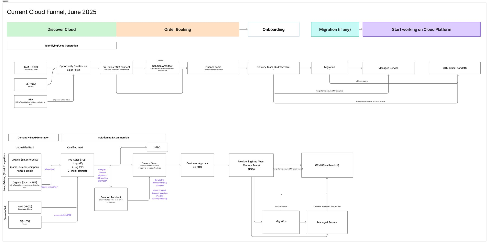
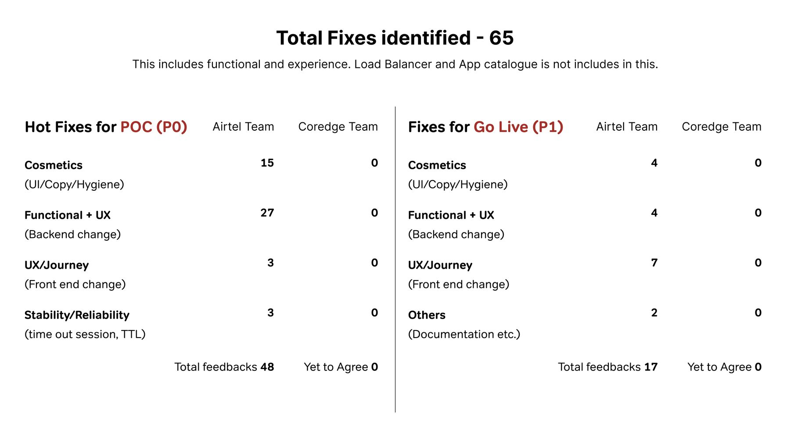
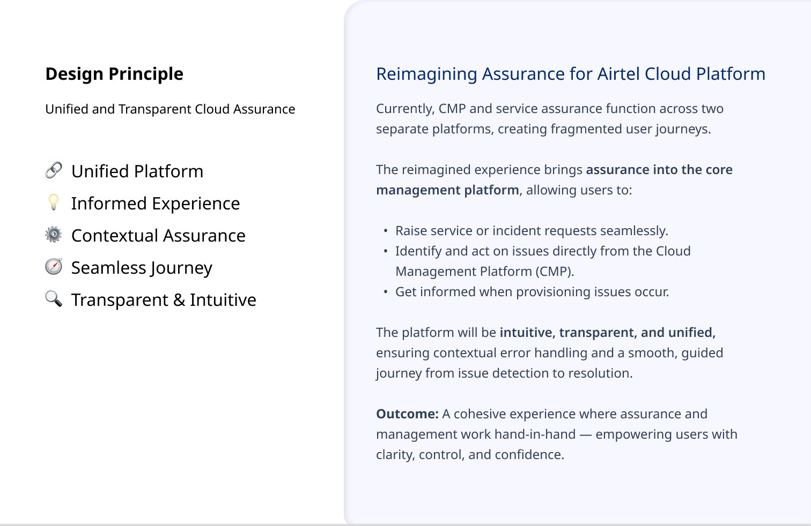
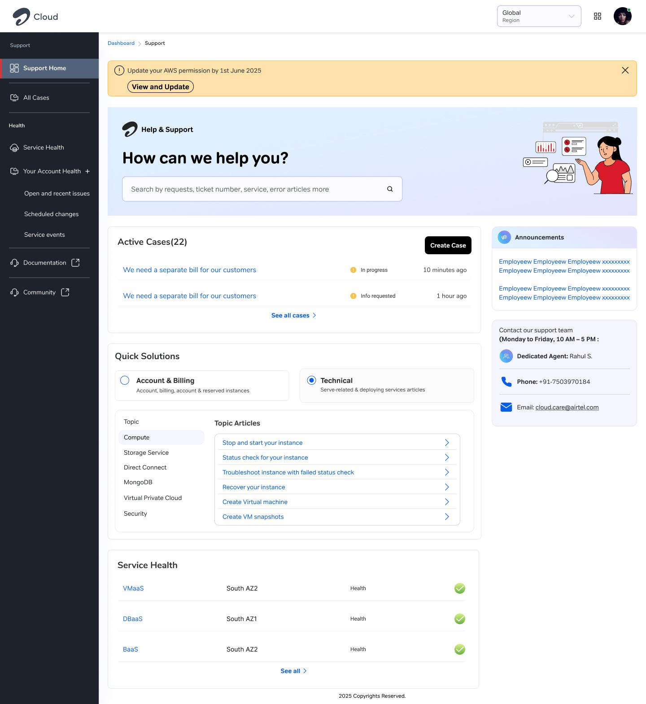
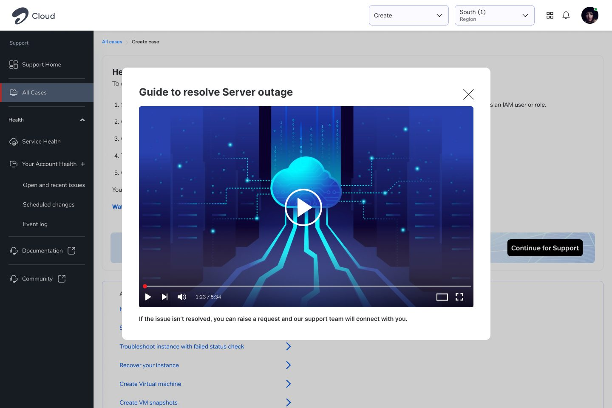
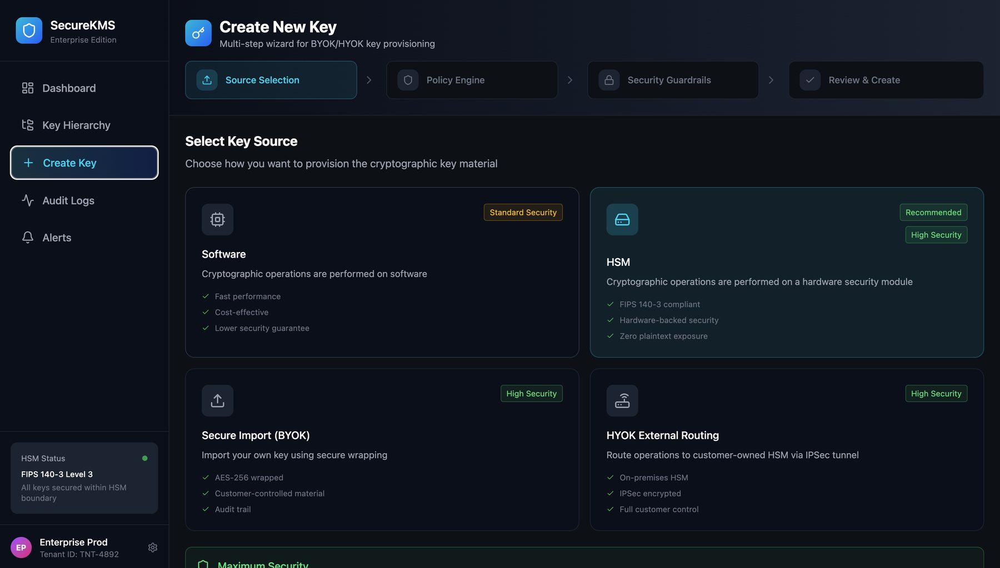
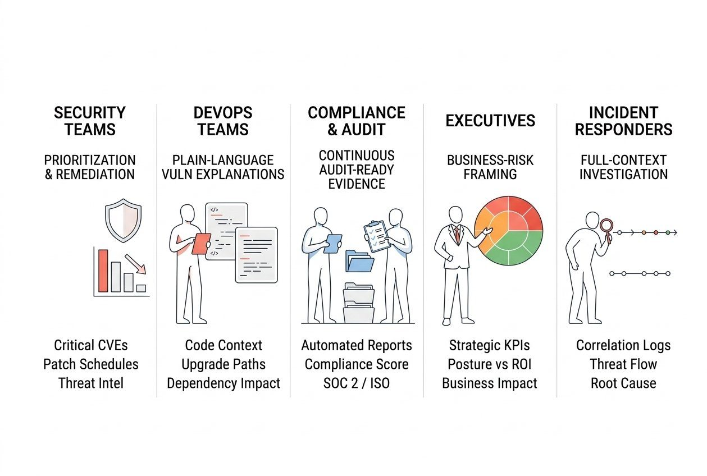
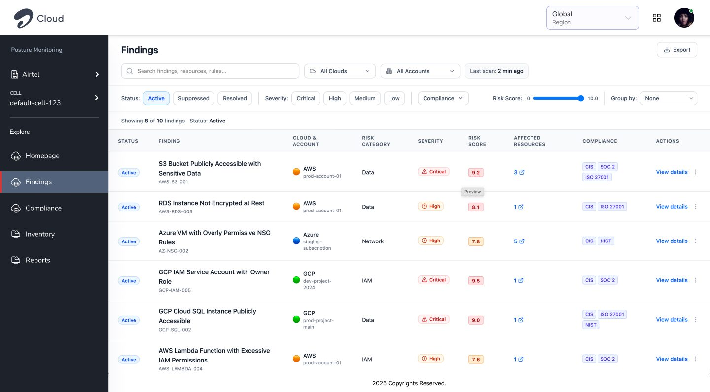
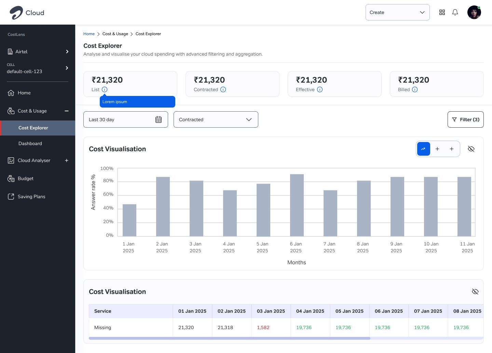

Airtel Cloud is Airtel's enterprise cloud console: compute, storage, security, cost and migration tools for business customers. It launched in August 2025 on a deliberately minimal scope.
Design lead, from pre-launch audit through launch to the design handover in April–May 2026. I owned the research and design decisions, and used AI tools for much of the execution.
Senior Lead Product Designer, Airtel
Aug 2025 – May 2026
Why the Cloud platform?
Airtel launched Cloud with 18 enterprise clients and a target of 50 by 2027, with contract value expected to grow about tenfold, to ₹180 crore (sales forecast). The bet was to launch on time and let real usage decide what to build next. By October 2026 it had 35 clients.
No single team controlled the product. An external agency built the core console, a security vendor owned key management with a spec and no design, a partner team owned security posture (CSPM), and two internal teams built Cost Analyser and CloudFerry migration on their own. That is normal for an enterprise platform: each product is led by its own domain experts with their own engineers. It still works that way; another team is now building IAM and the micro-frontend shell, and will take on Observability next. So every improvement had to be earned, not mandated.
The problem: a platform that couldn't explain itself
The biggest usability risk wasn't a missing feature. It was inconsistency on the fields customers touch first, a security tool that could show everything but couldn't say what to fix first, and a support flow that pretended one team owned a journey that crossed five.
I started this project sure that everything should be unified. Research proved me wrong.
A shared design language, not one console
- What triggered it
- Six tools built by five teams felt like six products. My first instinct was to pull them into one unified experience.
- Evidence
- A study of how AWS, Azure and GCP structure their consoles: every major provider keeps tools deliberately separate, for permissions and cognitive load. The pre-launch audit (65 issues) and the order-to-activation map (13 steps, a different owner at almost every one) showed the real problems were inconsistency and hand-offs, not the number of screens.
- Options
-
- One unified consoleMy starting hypothesis. It needed every team to rebuild around one interface, against how mature platforms handle permissions.
- A shared design language across separate toolsCommon components, one documentation template and one way to get help, adopted by each team in its own build.
- My part
- The research, the written proposal, the component library and documentation template, and prototypes each team could build to.
- Who had to agree
- Product, and each of the five delivery teams, none of which reported to me: the external agency, the security vendor, the partner team and two internal teams.
- What changed
- Every team builds with the shared component library, and engineering turned it into a micro-frontend boilerplate for new services. Every service uses the documentation template. The vendor built KMS to my prototype.
- Status
- Adopted by every team Global search and navigation wait on services not yet live
Each with its own patterns and documentation. Getting help meant a generic case form that crossed five owners.
- Shared components
- One docs template
- One help flow
Tools stay separate where permissions need it, but look, read and get help the same way. Global search and unified navigation come next, once the services they depend on are live.
Inconsistency and hand-offs, not missing features


Support that solves problems before a ticket
Assurance, the support layer, shipped knowingly broken to protect the launch date. Six to eight months later I rebuilt it from a written proposal with five principles and three explored concepts. The new flow replaced an out-of-the-box ServiceNow case form:
- Describe the problemA few details, not a long form.
- Try a suggested fixSolution steps and relevant articles pulled from the service documentation and SOPs.
- Raise it if still stuckOnly then add the extra details the support team needs.
- Track itA ticket page shows which team is solving it and the dedicated support person, with follow-up questions on the same ticket.
Result: since launch, more than 30% of cases are solved without a ticket, and support tickets are down by about 30%, against a goal of 10%.



Key management from a spec, and security that prioritises
The key management service (KMS) came from the vendor as a technical spec with no design. I designed the whole interaction model — including the Software, HSM, bring-your-own-key and hold-your-own-key choice — and the agency built the live integration to my prototype.
For CSPM, I benchmarked the product against Azure Defender and Google Security Command Center across five personas, from security teams to executives. That reframed it from a reporting tool into decision support: what to fix first, and why.
Research & testing
Field-level testing before go-live found 65 issues, including conflicting validation and undocumented limits. 43 were fixed before launch and 7 after. The other 15 depend on services that aren't live yet, such as global search, unified navigation and redirects between services.




Goals and early results
- At least 85% usability success on core platform tasks
- At least 80% success at discovering the right service
- 10% fewer support tickets caused by usability problems
| Goal | Target | Early result |
|---|---|---|
| Fewer support tickets | 10% fewer | ~30% fewer after the support redesign |
| Task success, support (Assurance) | — | ~80% |
| Task success, core console | 85% | ~70%. Not there yet; most remaining issues sit in global search and navigation, which depend on services not yet live |
| Finding the right service | 80% | Not measured yet |
Early figures from support data and task-success checks since launch. Metrics weren't instrumented at launch, so there is no older baseline for task success.
Influence without authority
Most of what slowed this down sat outside design. What got in the way, and how I worked around it:
I led with evidence — audits, benchmarks and prototypes — so teams adopted the design because it was right, not because they were told to.
Migrating it wasn't possible within the go-to-market timeline, so I started a shared component library. Every team now builds with it, and engineering turned it into a micro-frontend boilerplate so new services go live faster.
I designed the whole interaction model from the spec, rather than waiting for someone else to interpret it.
Mapping the lifecycle first showed a better form wouldn't fix it; it needed a cross-system journey.
Early figures come from support data and task-success checks after launch. Console task success (~70%) is still below the 85% goal.
What I gave up, on purpose
Most of the important calls on Cloud were about what not to do.
| Decision | What I gave up | Why |
|---|---|---|
| Launched with a knowingly broken Assurance | A good support experience at launch | Protected the go-live date; rebuilt it once real usage showed where to invest |
| Consistent design language, not one unified console | A single, seamless experience | Mature cloud platforms keep tools separate for permissions and cognitive load |
| Component library instead of migrating the existing build | Immediate visual consistency | Migration wasn't possible within the launch timeline; every team now uses the library |
| Self-service first, support form last | The quickest route to raising a ticket | Most issues can be fixed with guidance; escalation stays one step away |
| Shelved a finished Observability spec | Visible, demo-ready work | Identity and access was the platform's real constraint |
| Three-phase roadmap, Phases 2–3 deferred | Fixing everything at once | Phase 1 could start in-house now, with the rest sequenced |
The impact
What shipped, and what didn't
| Work | Status |
|---|---|
| Assurance: the new help and ticket flow | Live since Jan–Feb 2026 |
| Key management (KMS), built to my prototype | Live |
| Price Calculator | Live · 32+ quotes |
| Service documentation template | Used by every service |
| Shared component library | Used by every team |
| Pre-launch audit fixes | 50 of 65 shipped 15 waiting |
| CSPM, Cost Analyser and CloudFerry redesigns | In progress at handover |
| Global search, unified navigation, redirects | Wait on services not yet live |
| Observability | Specced, then paused for identity and access |
The identity lesson
A year in, the deepest finding surfaced: access permissions were still being assembled by hand, which made identity the platform's real constraint. I shelved a finished Observability spec to work on it, and it became the next case study.
What I'd do differently: push to sequence identity and access before launch, rather than discover the need a year in. The harder discipline here was saying no to my own finished work and my own starting strategy.